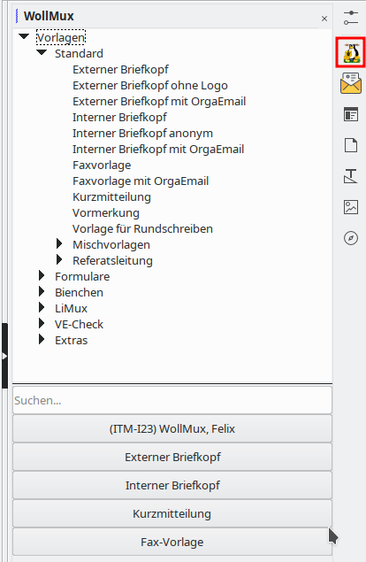

Bedienelemente des WollMux
Seitenleiste
So öffnen Sie die Seitenleiste: Wählen Sie Ansicht → Seitenleiste
WollMux-Sidebar
Die WollMux-Sidebar ist der Einstiegspunkt für alle Vorlagen und Formulare.
Aufruf

Seriendruck (WollMux)
Über die Seitenleiste Seriendruck können Serienbriefe erstellt werden die auch WollMux Features, wie z.B. WollMux-Formulare, verwenden.
Aufruf
Symbolleisten
So zeigen Sie eine geschlossene Symbolleiste an: Wählen Sie in LibreOffice --> Menü Ansicht --> Symbolleisten und klicken Sie auf den Namen der Symbolleiste.
Symbolleiste Sachleitende Verfügungen (WollMux)

Die Symbolleiste Sachleitende Verfügen stellt Werkzeuge zur Bearbeitung von Sachleitenden Verfügungen zur Verfügung.
Hilfen für Sachleitende Verfügungen verwenden
Aufruf
Falls noch nicht angezeigt: LibreOffice --> Menü Ansicht --> Symbolleisten --> Sachleitende Verfügungen (WollMux)
Die Schaltfläche Ziffer einfügen
Hilfen für Sachleitende Verfügungen verwenden - Ziffer einfügen
Die Schaltfläche Abdruck
Hilfen für Sachleitende Verfügungen verwenden - Abdruck
Die Schaltfläche Zuleitungszeile
Hilfen für Sachleitende Verfügungen verwenden - Zuleitungszeile
Die Schaltfläche Immer drucken
Hilfen für Sachleitende Verfügungen verwenden - Immer drucken
Die Schaltfläche Nicht im Original
Hilfen für Sachleitende Verfügungen verwenden - Nicht im Original
Die Schaltfläche Nur Original
Hilfen für Sachleitende Verfügungen verwenden - Nur Original
Die Schaltfläche Nur Entwurf
Hilfen für Sachleitende Verfügungen verwenden - Nur Entwurf
Die Schaltfläche “Nur Abdrucke”
Hilfen für Sachleitende Verfügungen verwenden - Nur Abdrucke
Symbolleiste Textbausteine (WollMux)
Die Symbolleiste Textbausteine stellt Werkzeuge zum Arbeiten mit Textbausteinen zu Verfügung.
Aufruf
Falls noch nicht angezeigt: LibreOffice --> Menü Ansicht --> Symbolleisten --> Textbausteine (WollMux)
Die Schaltfläche Textbaustein einfügen
Nach Betätigen der Schaltfläche , wird vom Cursor ausgehend rückwärts das erste Wort ausgewählt. Dieses wird dann durch einen Textbaustein ersetzt, falls ein solcher existiert. In den einzelnen Textbausteinen können Platzhalter eingefügt werden (LibreOffice→Menü “Einfügen”→Feldbefehle→Andere→Reiter “Funktionen”→Feldtyp “Platzhalter”→Format “Text”). Nach dem Einfügen der Textbausteine steht der Cursor auf dem ersten eingefügten Platzhalter. Mit dem Textbaustein können auch Parameter angegeben werden, die automatisch in freie Platzhalter eingetragen werden z.B <Name des Textbaustein><SEPARATOR><Einzufügender Text><SEPARATOR><Einzufügender Text>.
Damit Textbausteine über die Schaltfläche einfügt werden können, müssen diese über die WollMux-Konfiguration eingebunden sein. In der WollMux-Konfiguration wird auch der Textbausteinname, der dann aufgerufen wird, konfiguriert. Der Befehl Textbaustein einfügen kann auch über die WollMux-Konfiguration einem Tastenkürzel zugeordnet werden.
Weitere Informationen:
Die Schaltfläche Platzhalter anspringen
Über die Schaltfläche Platzhalter anspringen kann nach dem Einfügen der Textbausteine, vom ersten angefangen (falls es welche gibt), die darauf folgenden Platzhaltern angesprungen werden. Nach dem Anspringen können die Platzhalter durch Text überschrieben werden. Siehe auch Schaltfläche “Textbaustein einfügen”
Weitere Informationen:
Die Schaltfläche Empfänger auswählen

Über die Schaltfläche Empfänger auswählen wird der Dialog Empfänger auswählen aufgerufen. Über den Reiter LHM intern kann eine städtische Person gesucht werden und deren Adresse in das Empfängerfeld, z.B des Externen Briefkopf oder der Kurzmitteilung, übernommen werden. Der Reiter Spielwarenläden dient als Beispiel für Referate für eine Anpassung des Dialogs.
Weitere Informationen:
Symbolleiste Werkzeuge für Vorlagenersteller (WollMux)
Bei der Symbolleiste Werkzeuge für Vorlagenersteller handelt es sich um eine Ansammlung von speziellen Werkzeugen die hauptsächlich von Vorlagenerstellern benötigt werden.
Aufruf
Falls noch nicht angezeigt: LibreOffice → Menü Ansicht → Symbolleisten → Werkzeuge für Vorlagenersteller (WollMux)
Die Schaltfläche FormularMax 4000
Über die Schaltfläche FormularMax 4000 wird der FormularMax 4000 gestartet. Der FormularMax 4000 ist eine integrierte Entwicklungsumgebung für die Erstellung und Pflege von WollMux-Formularen und Vorlagen.
Weitere Informationen:
Die Schaltfläche Textbausteinverweis einfügen
Über die Schaltfläche Textbausteinverweis einfügen wird der Befehl Textbaustein einfügen nicht gleich ausgewertet, sondern erst nach dem Speichern als Vorlage und spätrigen öffnen. Es kann z.B bei der Vorlagenerstellung verwendet werden, wenn gewünscht wird das die Textbausteine erst beim Verwenden der Vorlage eingefügt werden sollen. Siehe auch Textbaustein einfügen
Weitere Informationen:
Die Schaltfläche Fehlerinfos erstellen
Die Schaltfläche Fehlerinfos erstellen erzeugt eine Datei $HOME/.wollmux/dump<DatumUndZeit>, die wichtige Informationen für die Fehlersuche im Zusammenhang mit dem WollMux enthält. Die Schaltfläche Fehlerinfos erstellen ist vor allem für WollMux-Administratoren geeignet, die bei der Installation und Einrichtung des WollMux auf Fehler stoßen, für deren Lösung Unterstützung durch IBS151 notwendig wird. In diesem Fall ist die über die Schaltfläche Fehlerinfos erstellen erzeugte dump-Datei an ein entsprechendes Vorfallticket anzuhängen.
Weitere Informationen
Menüeinträge
Info über Vorlagen und Formulare (WollMux)

In dem Dialog Info über Vorlagen und Formulare wird der verwendete WollMux und die verwendete Konfiguration angezeigt.
Weitere Informationen:
Aufruf
LibreOffice → Menü Hilfe → Info über Vorlagen und Formulare (WollMux)